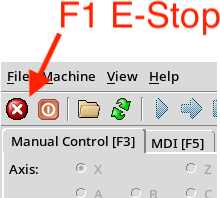

E-STOP is always engaged when the system is started. You must disengage the E-STOP before any other operations can be performed. This can be done by either clicking on the indicated icon, or by using the F1 key. Either will toggle this state.
Key Note: If something is going awry, use the F1 button to put the machine into an E-STOP mode. That will stop all movement. And, when the E-STOP status is reset, the settings you were using will be waiting for you to resume or restart the operation.
Lost Contact with a Box
Rosetta also goes into E-STOP by itself if the Raspberry Pi loses contact with the Base Box or the Expansion Box while it is running - for example, a network cable comes loose, or a box is switched off. All the axes stop, a message such as Expansion box lost contact - E-stop says which box it was, and (if used) the signal tower's red light comes on and the fault siren sounds.
Check that box's network cable, the network switch in the Base Box, and the box's power. Once the box is back in contact, press F1 to clear the E-STOP.
E-Stop Button
If an E-stop button is connected, pressing it also puts the system into E-STOP, and the E-STOP cannot be released (F1) until the button is released.
Using the E-Stop Button
| Machine State | E-Stop Button Status | Action Taken | What Happens |
| Emergency Stop | Engaged | Press the F1 button | Nothing happens. These cannot clear having the E-Stop button engaged. |
|
Click the Emergency Stop icon | |||
| Disengage E-Stop Button | Nothing happens. The E-Stop button will not toggle the Emergency Stop condition to off. | ||
| Disengaged | Press the F1 button | The Emergency Stop status is cleared. | |
|
Click the Emergency Stop icon | |||
| Machine is running | Disengaged | Engage the E-Stop Button | The machine drops into Emergency Stop |
| Press the F1 button | |||
|
Click the Emergency Stop icon |